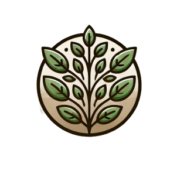

Mission Information
The mission is to help you reduce food waste through practical tips, meal planning, food storage techniques, and portion control.

The mission is to help you reduce food waste through practical tips, meal planning, food storage techniques, and portion control.
Did you know that nearly 1/3 of all food produced for human consumption is wasted each year? This not only impacts our wallets but also harms the environment through unnecessary CO2 emissions and resource depletion.
Reducing food waste starts with simple actions: plan your meals ahead, buy only what you need, store food correctly, and find creative ways to use leftovers.
DID YOU KNOW??? The average Dutch household wastes approximately 34.3KG of food per person every year. This not only affects your wallet but also has a significant impact on the environment, contributing to CO2 emissions and wasted resources.